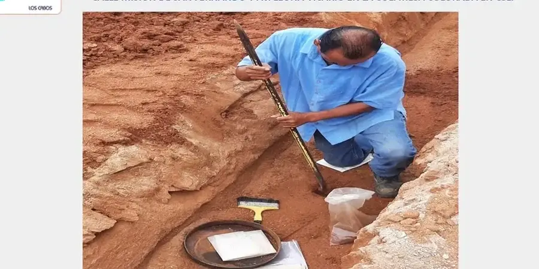

En nuestra oficina de Cádiz ofrecemos servicios integrales de geotecnia para proyectos de edificación, infraestructura y obra civil. Combinamos experiencia regional consolidada con equipos de laboratorio calibrados para caracterizar el subsuelo, diseñar cimentaciones seguras y realizar controles de ejecución. Nuestro enfoque abarca desde la prospección inicial mediante ensayos SPT hasta la elaboración de informes geotécnicos conforme a la normativa vigente, garantizando soluciones adaptadas a las condiciones locales y a los requerimientos de cada proyecto.

Imagen técnica de referencia — Cadiz
Alcance del trabajo
Cádiz se asienta sobre una geología compleja, dominada por depósitos terciarios y cuaternarios de la Cuenca del Guadalquivir y materiales alpujárrides de la Cordillera Bética. En el casco histórico y la zona portuaria predominan arenas limosas y arcillas de baja plasticidad con intercalaciones de gravas, mientras que en la Sierra de San Cristóbal afloran margas y calcarenitas del Mioceno. El nivel freático es somero en las proximidades del litoral, con valores entre 1 y 4 metros de profundidad, lo que exige un cuidadoso drenaje y control de subpresiones en sótanos y excavaciones. Desde el punto de vista geotécnico, son frecuentes los rellenos antrópicos heterogéneos en el casco antiguo, así como suelos expansivos en las zonas de expansión urbana. La sismicidad asociada a la falla de Azores-Gibraltar requiere considerar aceleraciones sísmicas básicas de 0,12g según la normativa NCSE-02, con un coeficiente de contribución del 1,0 para Cádiz capital. En los ensayos de laboratorio, es habitual encontrar valores de SPT entre 10 y 30 golpes en arenas sueltas a medias, mientras que en las margas compactas superan los 50 golpes. La determinación precisa de la permeabilidad mediante ensayos de infiltración es clave para el diseño de sistemas de drenaje y cimentaciones profundas.
Notas del área
Nuestra firma cuenta con un equipo de ingenieros geotécnicos con experiencia regional en la provincia de Cádiz, habiendo participado en estudios para puertos, promociones residenciales y obras lineales. Disponemos de un laboratorio de suelos calibrado según UNE-EN ISO/IEC 17025, con equipos para ensayos triaxiales, edométricos y de permeabilidad. Coordinamos directamente con los servicios técnicos municipales y la Demarcación de Costas, garantizando informes que cumplen los requisitos locales y las normativas autonómicas andaluzas.
En España, la geotecnia se rige por el Código Técnico de la Edificación (CTE), en particular el Documento Básico SE-C (Cimientos) y DB-SE-AE (Acciones). Para proyectos de infraestructura, se aplica la Instrucción de Carreteras (Norma 6.1-IC) y la Guía de Cimentaciones en Obras de Carretera. Los ensayos de campo siguen normativas UNE (p.ej., UNE 103-800 para SPT) y la normativa técnica aplicable (D1586, D2488). La evaluación sísmica se realiza conforme a la NCSE-02, y los estudios geotécnicos deben cumplir el Real Decreto 314/2006 y sus actualizaciones.
FAQ
¿Qué tipo de suelos predominan en el casco histórico de Cádiz y cómo afectan a las cimentaciones?
En el centro histórico de Cádiz abundan los rellenos antrópicos de hasta 6 metros de espesor, seguidos de arenas limosas y arcillas con niveles freáticos someros. Esto suele requerir cimentaciones profundas con pilotes hincados o pantallas de jet-grouting para evitar asientos diferenciales. Recomendamos realizar un estudio geotécnico detallado que incluya sondeos mecánicos y ensayos de penetración estándar.
¿Cómo se gestionan los problemas de sismicidad en los proyectos de Cádiz?
Cádiz se encuentra en una zona de sismicidad moderada (aceleración básica 0,12g). Para edificios de más de 7 plantas o infraestructuras críticas, es obligatorio realizar un análisis dinámico según la NCSE-02, considerando el tipo de suelo y la amplificación sísmica. En suelos blandos, se recomienda mejorar la capacidad portante mediante columnas de grava o inyecciones de cemento.
¿Qué normativa española regula los estudios geotécnicos en la Comunidad Autónoma de Andalucía?
Además del CTE (DB SE-C), en Andalucía se aplica el Decreto 60/2010 sobre calidad del suelo y la Orden de 15 de marzo de 2011 para estudios geotécnicos en obras de edificación. Para proyectos en el litoral, la Ley de Costas y el Real Decreto 876/2014 exigen estudios específicos de dinámica litoral y afección al dominio público marítimo-terrestre.
¿Cuál es el plazo habitual para obtener un informe geotécnico en Cádiz?
En proyectos residenciales o de mediana envergadura, el plazo típico oscila entre 3 y 5 semanas, incluyendo la campaña de campo (sondeos, SPT, calicatas) y los ensayos de laboratorio. Para obras lineales o de gran extensión, puede extenderse a 8-10 semanas. Siempre coordinamos con la dirección facultativa para ajustar los tiempos a la planificación de la obra.